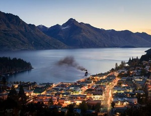

morly旅游网
新西兰（英语：New Zealand），又译纽西兰，是南太平洋的一个国家，政治体制实行君主立宪制混合英国式议会民主制，现为英联邦成员国之一。新西兰位于太平洋西南部，领土由南岛、北岛两大岛屿组成，以库克海峡分隔，南岛邻近南极洲，北岛与斐济及汤加相望。首都惠灵顿以及最大城市奥克兰均位于北岛。
14世纪时毛利人在此定居，1642年后，荷兰人和英国人先后到此。1840年沦为英国殖民地。1907年成为英国的自治领。1947年获得完全自主，成为主权国家，现为英联邦成员国。
新西兰是一个高度发达的资本主义国家，也是全球最美丽的国家之一。世界银行将新西兰列为世界上最方便营商的国家之一，其经济成功地从以农业为主，转型为具有国际竞争力的工业化自由市场经济。 鹿茸、羊肉、奶制品和粗羊毛的出口值皆为世界第一。 新西兰也是大洋洲最美丽的国家之一，总计约有30%的国土为保护区。拥有3项世界遗产、14个国家公园、3座海洋公园、数百座自然保护区和生态区。
克赖斯特彻奇
克赖斯特彻奇（Christchurch），华人简称为基督城，新西兰第三大城市，仅次于奥克兰和惠灵顿，是新西兰的“花园之城”，也是新西兰南岛最大的城市。
克赖斯特彻奇又称为克莱斯特彻奇或基督城，位于新西兰南岛东岸，又名“花园之城”，是新西兰第三大城市，新西兰南岛第一大城市，也是全国仅次于最大城市奥克兰和惠灵顿的第三大城市，也是新西兰除奥克兰和惠灵顿以外、来往世界各地的第三大门户。克赖斯特彻奇人口约37.5万，地势平坦。 克赖斯特彻奇拥有浓厚的英国气息，艺术文化气息浓厚，设施完备。
皇后镇
新西兰的皇后镇是一个被南阿尔卑斯山包围的美丽小镇，也是一个依山傍水的美丽城市。皇后镇全处都是观光地点，夏季蓝天艳阳，秋季为鲜红与金黄的叶子染成缤纷多彩的面貌，冬天的气候清爽晴朗，还有大片覆着白雪的山岭，而春天又是百花盛开的日子。四季分明，各有着截然不同的面貌。市区附近的瓦卡蒂普湖(Lake Wakatipu)是座深而蓝的高山湖。壮丽的山脉上几座覆着白雪的绿棕色山点缀于背景中。从皇后镇到山顶，则是一片绿油油的色彩。皇后镇之名源于殖民者认为此处风景秀丽应属女王所有，由此得名皇后镇。
惠灵顿植物园
惠灵顿植物园位于新西兰首都惠灵顿市一道V 字形的山岭上，占地26公顷。植物园好像是一座国际性的花园，世界各国的名树名花在这里几乎都能看见。其中有中国的山茶，法国的月季，巴西的珊瑚树，阿根廷的“魔鬼之手”，加那利群岛的凤凰树，澳大利亚的毛榉，诺福克的枞树，非洲的雪松，北美的鹅掌楸，荷兰的郁金香以及多种颜色的日本樱花。园内数量最多的还是新西兰土生土长的松、柏、榆、柳、蕨等。因为植物园有如此众多的来自不同国家、不同土壤、不同气候的花草、树木，这里才能四季常绿，山岭上和山谷里都开满鲜花，争奇斗艳，竞秀媲美。
伊甸山
伊甸山位于新西兰的奥克兰市中心以南约5公里处，是一死火山的火山口。山顶设有瞭望台，视野开阔，是眺望市景的好地方。此外，还可参观到12世纪时毛利人要塞的遗迹。
伊甸山是一座死火山，形成于2-3万年以前，高196米，是奥克兰陆地火山带中最高的火山，也是奥克兰最重要的象征之一。 火山爆发时所吐出来的岩浆覆盖面高达近6个平方公里。其喷出的岩浆多达一亿六千万立方米，可装满32400个奥林匹克标准泳池。从这里，您可以欣赏令人惊奇的火山口遗迹，俯瞰奥克兰市区全景及两大港湾。锥形的火山口就在山顶的脚下，而火山口底部总是有食草的牛群。 市区内高耸的现代建筑与绿油油的“田园风光” 相互辉映，的确别有一番情趣。在著名的伊甸火山上，有一个标志牌，上面有世界较大首都距离此地公里数。
伊甸山属温带海洋性气候，四季温差不大，四季皆适宜旅游。
内容整理至网络，如有侵权，请联系我们！1255394075@qq.com